Блок питания ПК
Во всех современных компьютерах используются блоки питания стандарта ATX. Ранее использовались блоки питания стандарта AT, в них не было возможности удаленного запуска компьютера и некоторых схемотехнических решений. Введение нового стандарта было связано и с выпуском новых материнских плат. Компьютерная техника стремительно развивалась и развивается, поэтому возникла необходимость улучшения и расширения материнских плат. С 2001 года и был введен этот стандарт.
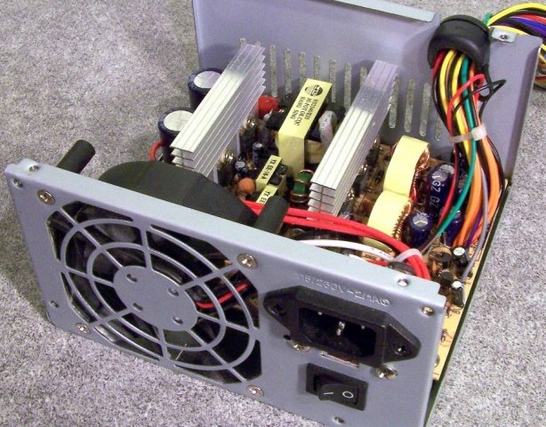
Рис. 1 - Блок питания ПК стандарта ATX
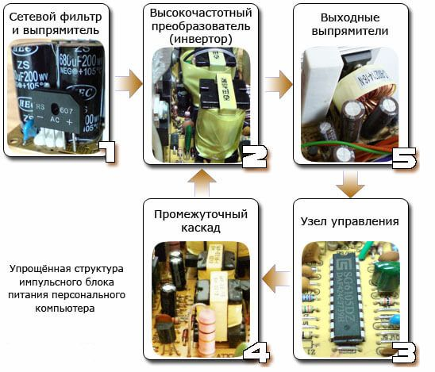
Рис. 2 - Упрощенная структура импульсного блока питания ПК
Расположение элементов на плате
На рисунке 3, показаны все узлы блока питания, далее мы кратко рассмотрим их предназначение.
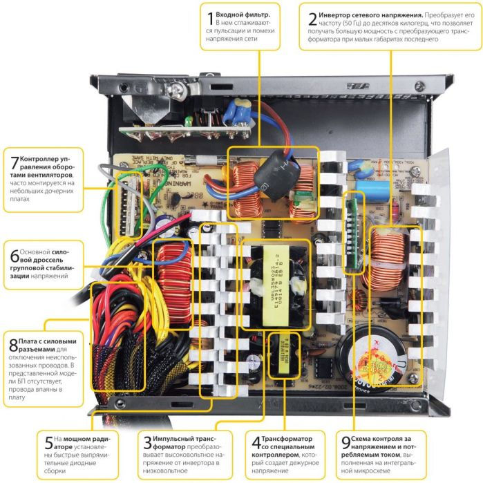
Рис. 3 - Узлы блока питания ПК
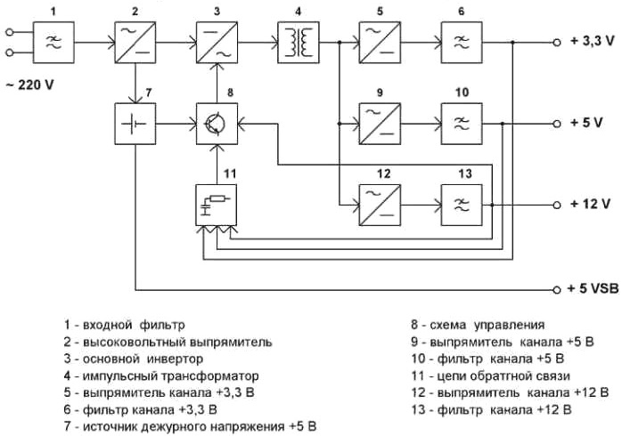
Рис. 4 - Упрощенная структурная схема ИБП ПК
На рис. 5 представлена схема электрическая принципиальная, разбитая на блоки.
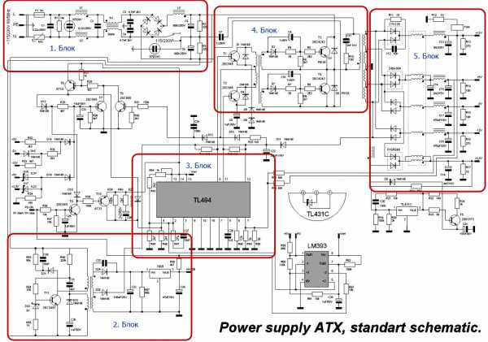
Рис. 5 - Схема электрическая принципиальная ИБП ПК
На входе блока питания стоит фильтр электромагнитных помех из дросселя и ёмкости (1 блок). В дешевых блоках питания его может не быть. Фильтр нужен для подавления помех в электропитающей сети возникших в результате работы импульсного источника питания.
Все импульсные блоки питания могут ухудшать параметры электропитающей сети, в ней появляются нежелательные помехи и гармоники, которые мешают работе радиопередающих устройств и прочего. Поэтому наличие входного фильтра крайне желательно, но товарищи из Китая так не считают, поэтому экономят на всём. На рис. 6 показан блок питания без входного дросселя.
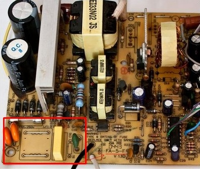
Рис. 6 - Блок питания без входного дросселя
Дальше сетевое напряжение поступает на выпрямительный диодный мост, через предохранитель и терморезистор (NTC), последний нужен для зарядки фильтрующих конденсаторов. После диодного моста установлен еще один фильтр, обычно это пара больших электролитических конденсаторов, будьте внимательны, на их выводах присутствует большое напряжение. Даже если блок питания выключен из сети следует предварительно их разрядить резистором или лампой накаливания, прежде чем трогать руками плату.
После сглаживающего фильтра напряжение поступает на схему импульсного блока питания она сложная на первый взгляд, но в ней нет ничего лишнего. В первую очередь запитывается источник дежурного напряжения (2 блок), он может быть выполнен по автогенераторной схеме, а может быть и на ШИМ-контроллере. Обычно – схема импульсного преобразователя на одном транзисторе (однотактный преобразователь) (рис. 7), на выходе, после трансформатора, устанавливают линейный преобразователь напряжения (КРЕНку).
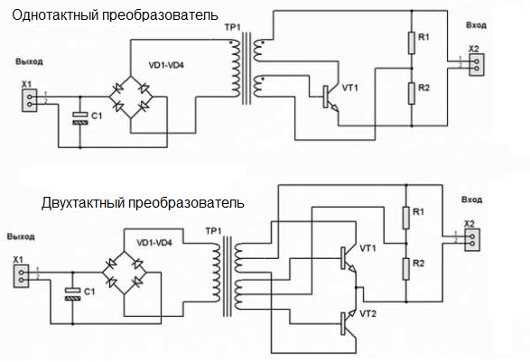
Рис. 7 - Однотактный и двухтактный преобразователь
Типовая схема с ШИМ-контроллером показана на рис. 8.
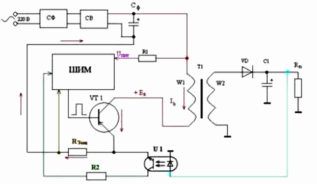
Рис. 8 - Схема с ШИМ-контроллером
На рис. 9 дана увеличенная версия схемы каскада из приведенного примера. Транзистор стоит в автогенераторной схеме, частота работы которой зависит от трансформатора и конденсаторов в его обвязке, выходное напряжение от номинала стабилитрона (в нашем случае 9 В) который играет роль обратной связи или порогового элемента который шунтирует базу транзистора при достижении определенного напряжения. Оно дополнительно стабилизируется до уровня 5В, линейным интегральным стабилизатором последовательного типа L7805.
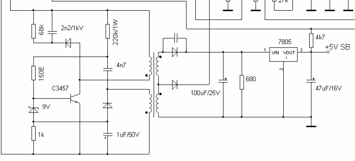
Рис. 9 - Часть принципиальной схемы БП
Дежурное напряжение нужно не только для формирования сигнала включения (PS_ON), но и для питания ШИМ-контроллера (блок 3). Компьютерные блоки пиатния ATX чаще всего построены на TL494 микросхеме или её аналогах. Этот блок отвечает за управление силовыми транзисторами (4 блок), стабилизацию напряжения (с помощью обратной связи), защиту от КЗ. Вообще 494 – это культовая микросхема используется в импульсной технике очень часто, её можно встретить и в мощных блоках питания для светодиодных лент.
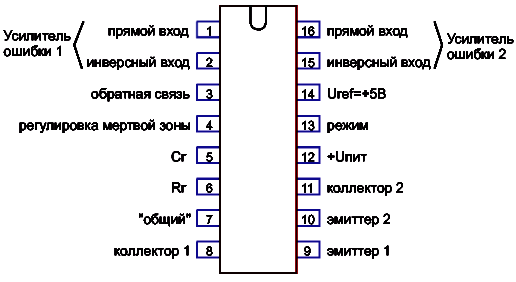
Рис. 10 - Распиновка микросхемы TL494
На схеме рис. 11 силовые транзисторы (2SC4242) из 4 блока включаются через «раскачку» выполненную на двух ключах (2SC945) и трансформаторе. Ключи могут быть любыми, как и остальные элементы обвязки – это зависит от конкретной схемы и производителя. Обе пары ключей нагружены на первичные обмотки соответствующих трансформаторов. Раскачка нужна, поскольку для управления биполярными транзисторами нужен приличный ток.
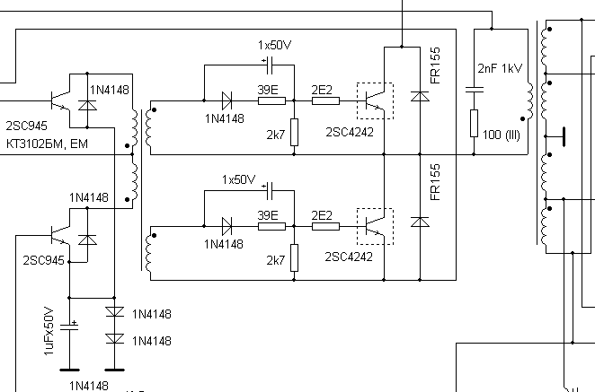
Рис. 11 - Часть принципиальной схемы ИБП ПК с ключами
Последний каскад – выходные выпрямители и фильтры, там расположены отводы от обмоток трансформаторов, диодные сборки Шоттки, дроссель групповой фильтрации и сглаживающие конденсаторы. Компьютерный блок питания выдаёт целый ряд напряжений для функционирования узлов материнской платы, питания устройств ввода-вывода, питания HDD и оптических приводов: +3.3В, +5В, +12В, -12В, -5В. От выходной цепи запитан и охлаждающий кулер.
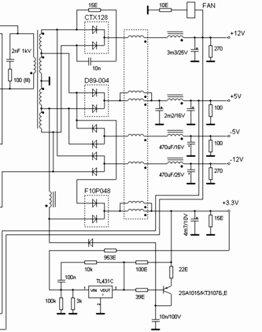
Рис. 12 - Выходные выпрямители и фильтры на принципиальной схемы БП
Диодные сборки представляют собой пару диодов соединенных в общей точки (общий катод или общий анод). Это быстродействующие диоды с малым падением напряжения.
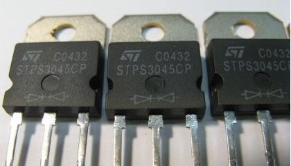
Рис. 13 - Быстродействующие диоды с малым падением напряжения
Дополнительные функции
Продвинутые модели компьютерных блоков питания могут дополнительно оснащаться платой контроля оборотов кулера, которая подстраивает их под соответствующую температуру, когда вы нагружаете блок питания, кулер крутится быстрее. Такие модели более комфортны в использовании, поскольку создают меньше шума при малых нагрузках.
В дешевых источниках питания кулер подключен напрямую к линии 12 В и работает на полную мощность постоянно, это усиливает его износ, в результате чего шум станет еще больше.
Если ваш блок питания имеет хороший запас по мощности, а материнская плата и комплектующие довольно скромные по потреблению – можно перепаять кулер на линию 5 В или 7 В припаяв его между проводами +12 В и +5 В. Плюс кулера к желтому проводу, а минус к красному. Это снизит уровень шума, но не стоит так делать, если блок питания нагружен полностью.
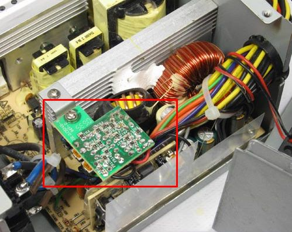
Рис. 14 - Дополнительные функции БП
Еще более дорогие модели оснащены активным корректором коэффициента мощности. Он нужен для уменьшения влияния источника питания на питающую сеть. Он формирует нужные напряжения на входных каскадах ИП, при этом сохраняя изначальную форму питающего напряжения. Достаточно сложное устройство и в пределах этой статьи подробнее рассказывать о нем не имеет смысла. Ряд эпюр (рис. 15) отображает примерный смысл использования корректора.
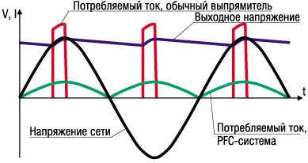
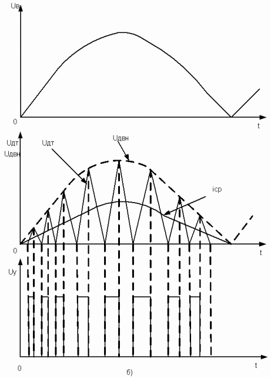
Рис. 15 - Диаграммы работы активного корректора коэффициента мощности
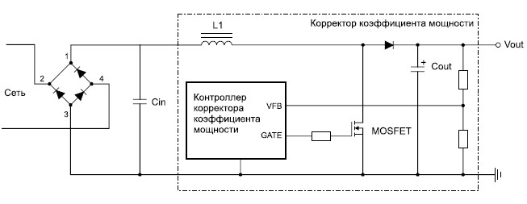
Рис. 16 - Схема корректора
Проверка работоспособности
К компьютеру ИП подключается через стандартизированный разъём, он универсален в большинстве блоков, за исключением специализированных источников питания, которые могут использовать ту же клеммную колодку, но с иной распиновкой, давайте рассмотрим стандартный разъём и назначение его выводов. У него 20 выводов, на современных материнских платах подключается дополнительных 4 вывода.
Кроме основного 20-24 контактного разъёма питания из блока выходят провода с колодками для подключения напряжения к жесткому диску, оптическому приводу SATA и MOLEX, дополнительное питание процессора, видеокарты, питание для флоппи-дисковода.
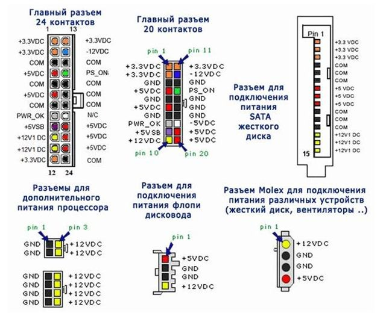
Рис. 17 - Распиновки разьемов БП ПК
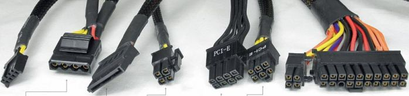
Рис. 18 - Разьемы блоков питания
Конструкция всех разъёмов таков, чтобы вы случайно не вставили его «вверх ногами», это приведет к выходу из строя оборудования. Главное, что стоит запомнить: красный провод – это 5 В, Жёлтый – 12 В, Оранжевый – 3.3 В, Зеленый – PS_ON – 3...5 В, Фиолетовый – 5 В, это основные которые приходится проверять до и после ремонта.
Помимо общей мощности блока питания большую роль играет мощность, а вернее ток каждой из линий, обычно они указываются на наклейке на корпусе блока. Эта информация станет очень кстати, если вы собрались запускать свой блок питания ATX без компьютера для питания других устройств (рис. 19).
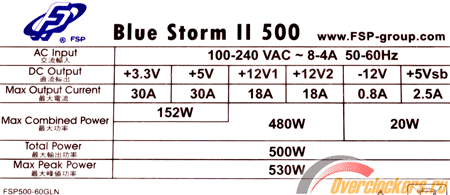
Рис. 19 - Характеристики блока питания
При проверке блока желательно его отключить от материнской платы, это предотвратит превышение напряжений выше номинальных (если блок всё же не исправен). Но на холостом ходу запускать его не рекомендуют, это может привести к проблемам и поломке. Да и напряжения на холостом ходу могут быть в норме, но под нагрузкой значительно проседать.
В качественных блоках питания установлена защита, которая отключает схему при отклонении от нормальных напряжений, такие экземпляры вообще не включатся без нагрузки. Далее мы подробно рассмотрим, как включать блок питания без компьютера и какую можно повесить нагрузку.
Использование блока питания без компьютера
Если вы вставите вилку в розетку и включите тумблер на задней панели блока, напряжений на выводах не будет, но должно появиться напряжение на зеленом проводе (от 3 до 5 В), и фиолетовом (5 В). Это значит, что источник дежурного питания в норме, и можно пробовать запускать блок питания.
На самом деле всё достаточно просто, нужно замкнуть зеленый провод на землю (любой из черных проводов). Здесь всё зависит от того как вы будете использовать блок питания, если для проверки, то можно это сделать пинцетом или скрепкой. Если он будет включен постоянно или вы будете выключать его по линии 220 В, то скрепка, вставленная между зеленым и черным проводом рабочее решение (рис. 20).
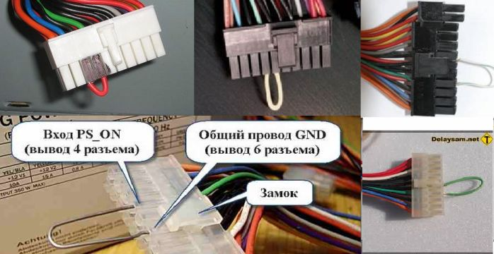
Рис. 20 - Включение БП ПК с помощью скрепки
Другой вариант – это установить кнопку с фиксацией или тумблер между этими же проводами (рис. 21).
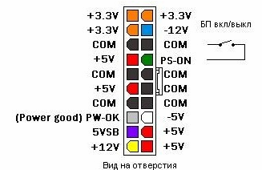
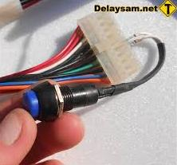
Рис. 21 - Установка кнопки управления
Чтобы напряжения блока питания были в норме при его проверке нужно установить нагрузочный блок, можно его сделать из набора резисторов по схеме на рис. 22. Но обратите внимание на величину резисторов, по каждому из них будет протекать большой ток, по линии 3,3 В порядка 5 А, по линии 5 В – 3 А, по линии 12 В – 0,8 А, а это от 10 до 15 Вт общей мощности по каждой линии.
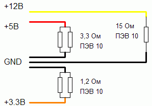
Рис. 22 - Нагрузочный блок
Резисторы нужно подбирать соответствующие, но не всегда их можно найти в продаже, особенно в небольших городах, где малый выбор радиодеталей. В других вариантах схемы нагрузки, токи еще больше.
Один из вариантов исполнения подобной схемы показан на рис. 23
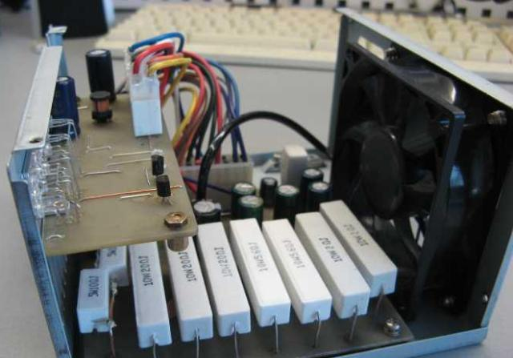
Рис. 23 - Вариант исполнения нагрузочного блока
Другой вариант использовать лампы накаливания или галогеновые лампы, на 12 В подойдут от автомобиля их можно использовать и на линиях с 3,3 и 5 В, стоит только подобрать нужные мощности. Еще лучше найти автомобильные или мотоциклетные 6 В лампы накаливания и подключить несколько штук параллельно. Сейчас продаются 12 В светодиодные лампы большой мощности. Для 12 В линии можно использовать светодиодные ленты.
Если вы планируете использовать компьютерный блок питания, например, для питания светодиодной ленты, будет лучше, если вы немного нагрузите линии 5 В и 3,3 В.
Заключение
Блоки питания ATX отлично подходят для питания радиолюбительских конструкций и как источник для домашней лаборатории. Они достаточно мощные (от 250, а современные от 350Вт), при этом можно найти на вторичном рынке за копейки, также подойдут и старые модели AT, для их запуска нужно лишь замкнуть два провода, которые раньше шли на кнопку системного блока, сигнала PS_On на них нет.
Если вы собрались ремонтировать или восстанавливать подобную технику, не забывайте о правилах безопасной работы с электричеством, о том, что на плате есть сетевое напряжение и конденсаторы могут оставаться заряженными долгое время.
Включайте неизвестные блоки питания через лампочку, чтобы не повредить проводку и дорожки печатной платы. При наличии базовых знаний электроники их можно переделать в мощное зарядное для автомобильных аккумуляторов или в лабораторный блок питания. Для этого изменяют цепи обратной связи, дорабатывают источник дежурного напряжения и цепи запуска блока.
Источники
electrik.info - Как устроен компьютерный блок питания и как его запустить без компьютера